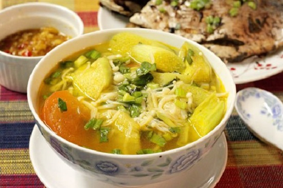

Chi Tiết Sản Phẩm
Canh nấm nấu chua
Vị chua dịu của dứa kết hợp với vị ngọt thanh của nấm thật tuyệt vời, làm sao bạn có thể chối từ một món ăn ngon thế này. Hướng dẫn nấu những món ăn gia đình dưới đây sẽ giúp bạn làm món canh nấm này một cách đơn giản nhất và ngon nhất.